Sirk Telaşı
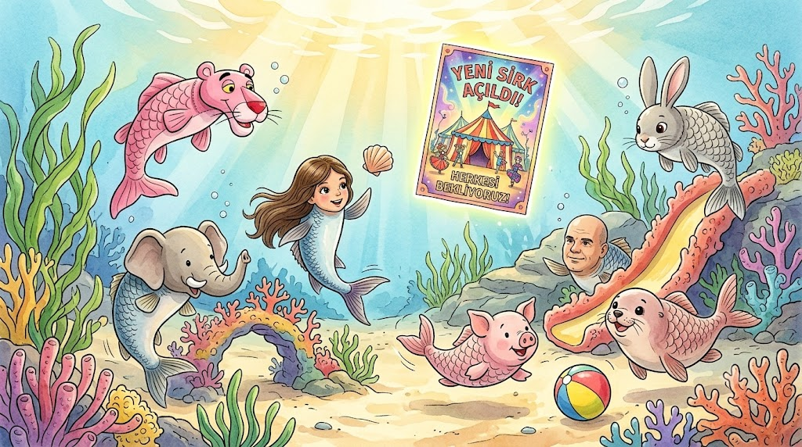
Bir gün yedi küçük balık; Bugsyfish, Rosyfish, Mirfish, Elifish, Pinkfish, Sinfish ve Ninfish parkta neşeyle oynuyorlardı. Tam o sırada etrafta şöyle bir haber yankılandı:
"Duyduk duymadık demeyin! Yeni sirk açıldı, herkesi bekliyoruz!"
Developed by Sinan/Nisan
Müjde!
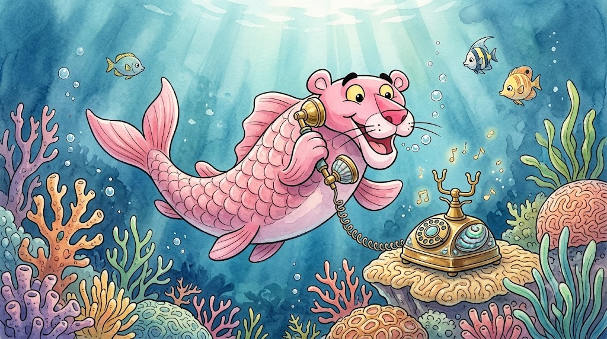
Bu haberi duyduktan kısa bir süre sonra Pinkfish’in telefonu çalmaya başladı: Ninining, ninining, ninining! Arayan Pinkfish’in annesiydi.
"Alo, anne! Niye aradın beni, ne oldu?" diye sordu Pinkfish.
Annesi, "Yeni bir sirk açılmış, sizi oraya götüreceğiz, o yüzden aradım!" diyerek müjdeyi verdi.
Developed by Sinan/Nisan
Heyecan Başlıyor
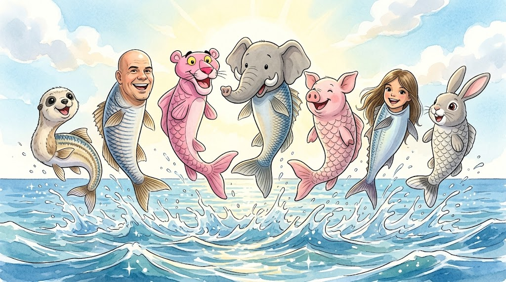
Bunu duyan yedi kahraman yerlerinde duramayacak kadar mutlu oldular ve sevinçle zıplamaya başladılar: "Heyyy!"
Çok geçmeden herkesin annesi aramaya başladı; herkes biletleri alıyordu! Sirkin hangi tarihte olduğunu öğrenen kahramanlarımız o kadar heyecanlandılar ki, heyecandan ölecek gibi oldular. Pinkfish, "Ya bu sirk için çok heyecanlıyım!" diyerek duygularını dile getirdi.
Developed by Sinan/Nisan
İsveç Yolculuğu
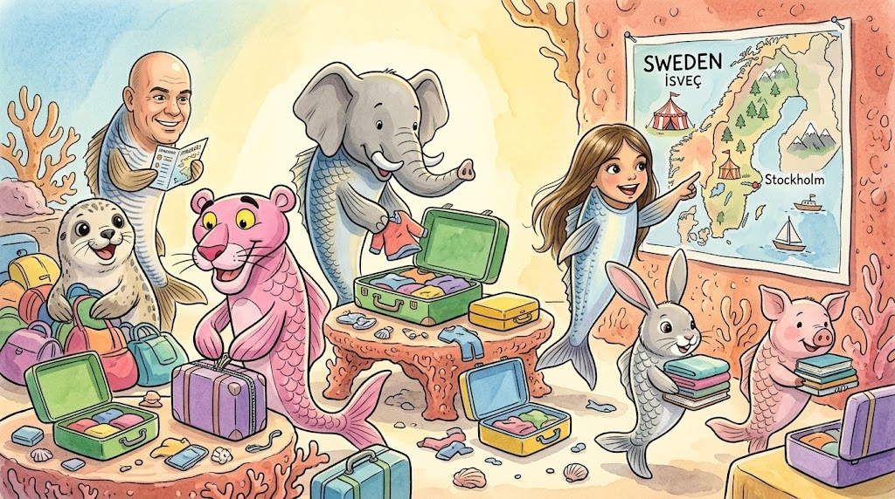
Birden bir ses duyuldu: "Çocuklar, yarın gideceğimiz sirk çok uzakta! Bu yüzden hemen valizleri hazırlayın. Akşam uçup İsveç'e gidiyoruz!"
Çok geçmeden çocuklar İsveç'in denizini çok merak etmişlerdi. Hemen hazırlıklarını tamamlayıp denizaltı gemisine ve su arabasına bindiler. Ancak yolda o kadar uykuları geldi ki, deniz botunda derin bir uykuya daldılar.
Developed by Sinan/Nisan
Kostüm Telaşı
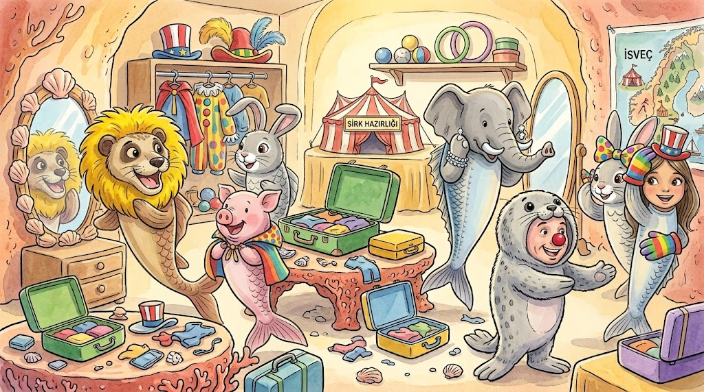
Uyandıklarında çok geç olmuştu! Hemen telaşla sirke gitmek için hazırlanmaya başladılar. Hepsi birbirinden ilginç ve tatlı kostümler seçti:
- Mirfish: Kırmızı güzel ayakkabılar giydi ve aslan yelesi taktı.
- Rosyfish: Eldiven ve şapka taktı.
- Bugsyfish: Kulaklarına şekil verip komik bir görünüme büründü.
- Pinkfish: Burnına tatlı, kırmızı bir ponpon yapıştırdı.
- Elifish: Burnunu elmaslarla süsledi.
- Sinfish: Önce aslan kostümü giydi ama Mirfish'in aslan yelesi taktığını görünce fok balığı kostümü giymeye karar verdi.
- Ninfish: Saçlarını değişik yapıp güzel kıyafetler giydi.
Developed by Sinan/Nisan
Devasa Çadır
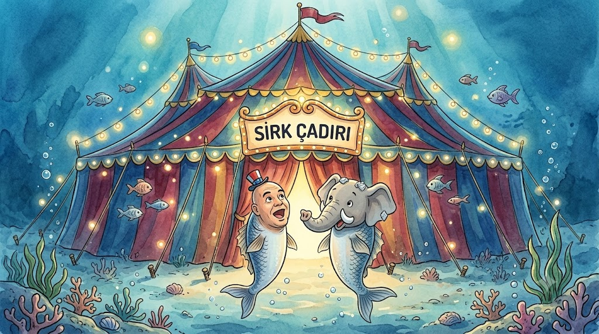
Herkes çok iyi hazırlanmıştı. Sirkin devasa çadırına geldiklerinde, Rozi gözlerine inanamayarak, "Vay canına, inanamıyorum! Buranın bu kadar büyük ve kocaman olacağını tahmin etmemiştim!" dedi.
Elifish ise, "Vay, burası hayalimden bile çok güzel," diyerek ona katıldı.
Developed by Sinan/Nisan
Havuç ve Sıra
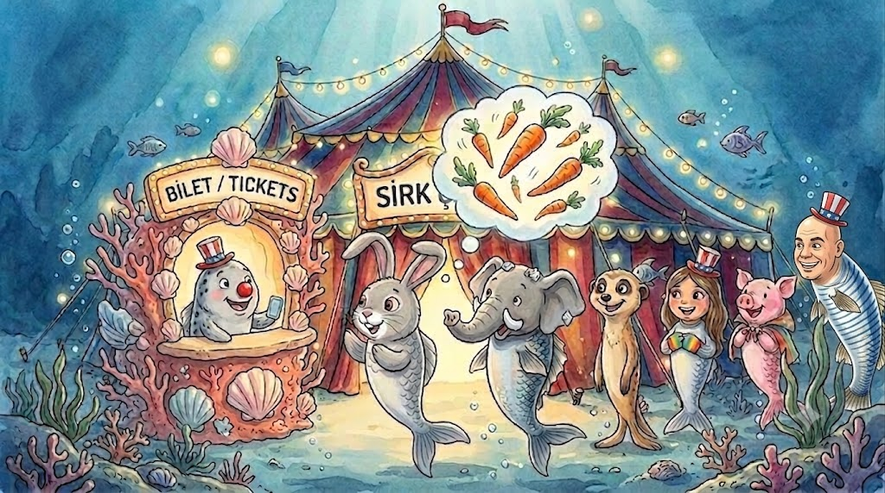
Deniz havuçlarını çok seven Bugsyfish ise merakla sordu: "İçeride havuçlar var mıdır?"
Çocuklar içeri girmek için biletlerini okutma sırasında beklerken biraz sıkılsalar da, "Keşke şu an saat ileride olsa da hemen sirkte eğleniyor olsak!" diye iç geçirdiler. Sıra onlara geldiğinde, nihayet içeri adım attılar.
Developed by Sinan/Nisan
Muhteşem Gösteri
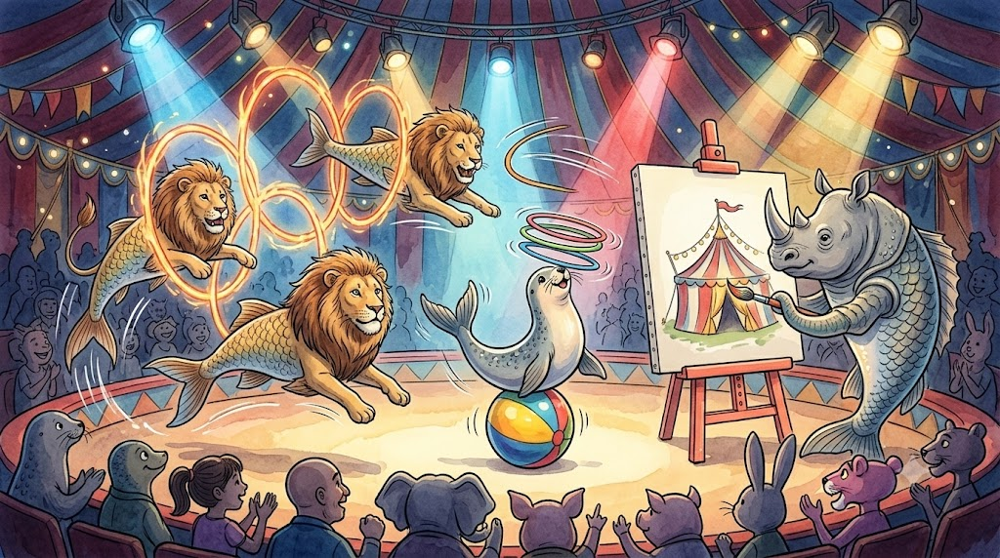
15 dakika sonra herkes yerine yerleştiğinde muhteşem gösteri başladı!
Aslanlar devasa halkaların içinden atladı. Fok balıkları burunlarının üzerinde çemberler çevirdi. Kocaman, boynuzları boyalı bir gergedan beyaz bir duvara ağaç resimleri çizdi.
Gösteriyi o kadar sevdiler ki, sirk bittiğinde hemen bir sonrakine gitmek istediler.
Developed by Sinan/Nisan
Üzücü Haber
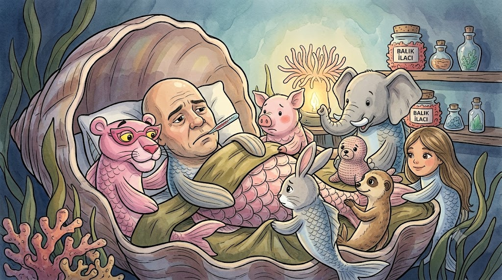
Aylar, yıllar geçti ve yeni bir sirk gösterisinin zamanı geldi. Bütün arkadaşlar oraya tekrar gitmek için sabırsızlanıyordu.
Ancak tam o gün üzücü bir şey oldu: Sinfish hastalandı!
Developed by Sinan/Nisan
Gerçek Dostluk
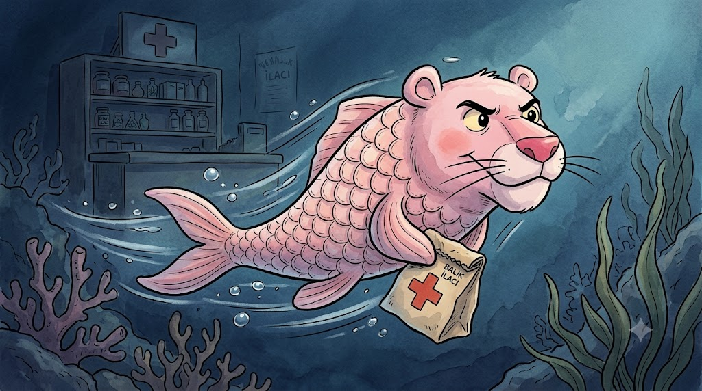
Sinfish sirke gidemeyeceği için çok üzüldü, ama gerçek dostluk kendini tam da burada gösterdi. Arkadaşları onu yalnız bırakmayıp yanında kaldılar.
Pinkfish hemen eczaneye koşup Sinfish için ilaçlar aldı.
Developed by Sinan/Nisan
Zamanla Yarış
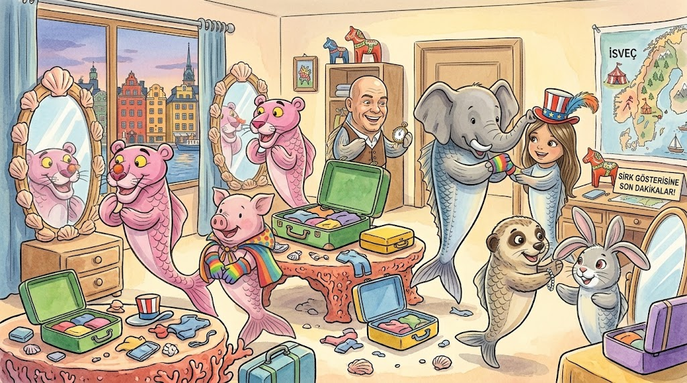
Sirkin başlamasına 13 saat kalmıştı ve İsveç'e varmaları 10 saat sürüyordu.
İlaçları içen Sinfish hemen iyileşti! Aceleyle yola çıktılar, İsveç'e vardılar ve hemen otele geçip hazırlandılar.
Developed by Sinan/Nisan
Mutlu Son
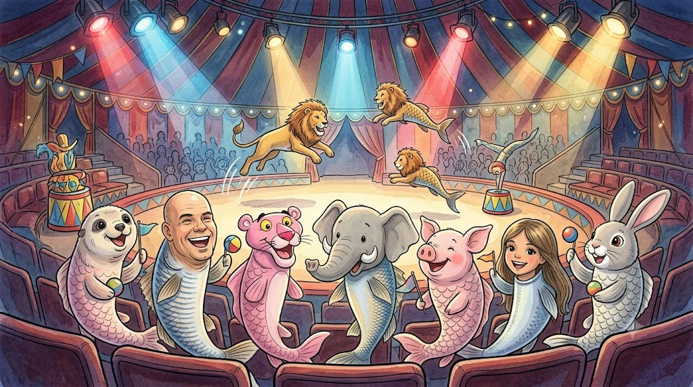
Gösterinin başlamasına sadece 10 dakika kala sirke yetişmeyi başardılar ve bu muhteşem gösteriyi ikinci kez keyifle izlediler!
Veeee bu hikaye de burada bittiiii.
Developed by Sinan/Nisan